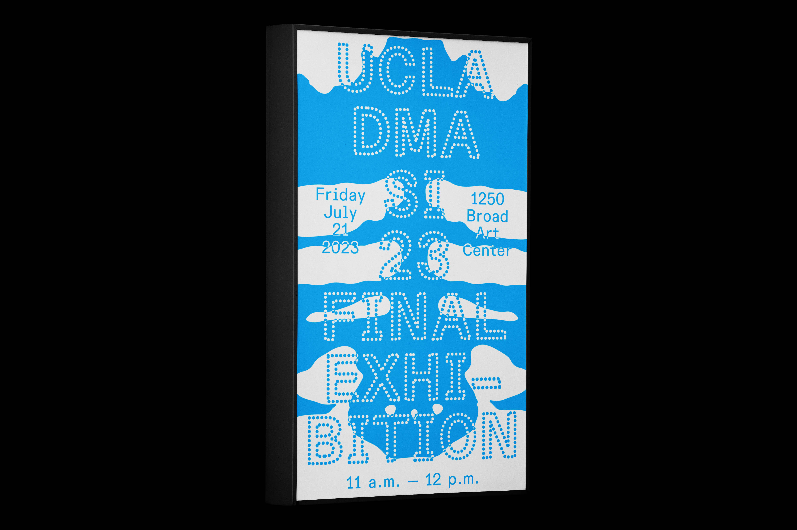
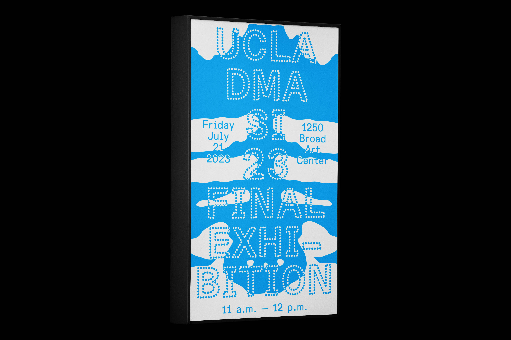

UCLA School of the Arts and Architecture Celebrations
Identity / Print / Web
Identity for a series of quarterly celebrations at UCLA School of the Arts and Architecture. Based on the existing UCLA Arts logo, a custom typeface was designed around a circular grid that became the basis for the identity.
with Anne Marie Burke, Louise Forster, and Kylie Carrigan for UCLA School of the Arts and Architecture


 
